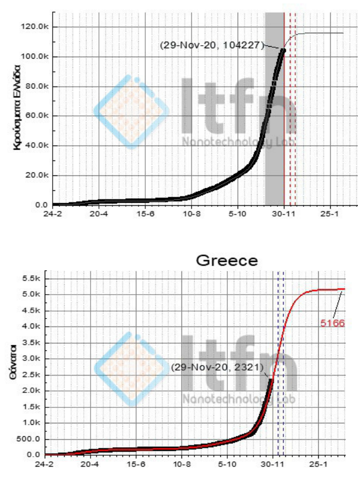
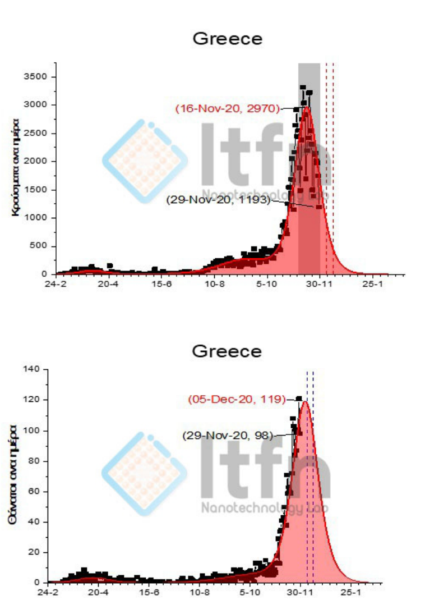
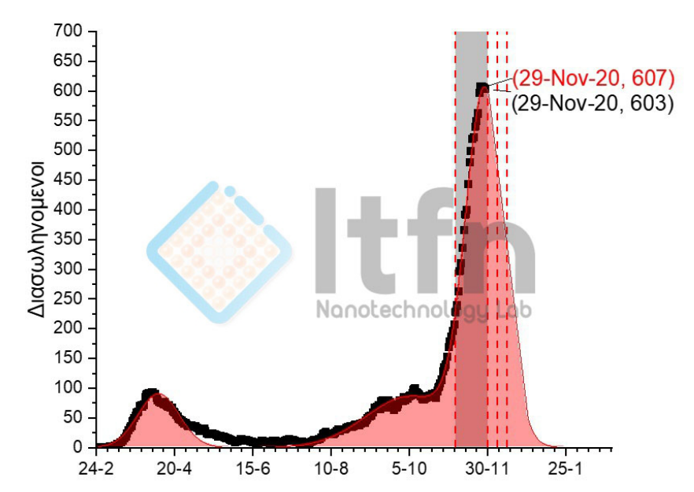

Σε κάθε μεγάλη κρίση, η συζήτηση για τα «μέτρα» καταλήγει συχνά σε ένα απλό δίλημμα: άνοιγμα ή κλείσιμο, επιτήρηση ή ελευθερία, οικονομία ή υγεία.
Όμως το πραγματικό ερώτημα είναι βαθύτερο:
τι είδους πολιτεία χρειαζόμαστε για να παίρνει αποφάσεις που αντέχουν στον χρόνο, στην αβεβαιότητα και στην κοινωνική φθορά;
Το υλικό που έχουμε στα χέρια μας—προβλεπτικές καμπύλες, χρονικές κορυφώσεις σε κρούσματα/θανάτους/διασωληνωμένους, και αναλυτικά πρωτόκολλα για έναν ειδικό παραγωγικό κλάδο (μινκ)—δεν είναι απλώς τεχνική πληροφορία.
Είναι καθρέφτης της κρατικής ικανότητας: κανόνες, λογοδοσία, συντονισμός, και εφαρμοσιμότητα.
Ας ξεκινήσουμε από το πιο πολιτικά κρίσιμο:
- Η δημόσια πολιτική σε κρίση δεν κρίνεται μόνο από το «τι αποφασίζει», αλλά από το πώς το αποφασίζει.
- Η ανακοίνωση για την εξέλιξη της πανδημίας βασίζεται σε αναλύσεις/προβλέψεις «με βάση και τα μέχρι σήμερα μέτρα του lockdown» και περιγράφει ρητά ότι άλλοι δείκτες πέφτουν νωρίτερα και άλλοι αργότερα.
- Προβλεπόμενη ελάττωση διασωληνωμένων μετά το μέγιστο, αλλά υψηλοί θάνατοι για ημέρες, με κορύφωση γύρω στις 5–6 Δεκεμβρίου.
- Αυτό από μόνο του απαιτεί πολιτεία που μπορεί να μιλάει στη δημόσια σφαίρα χωρίς να πουλάει βεβαιότητες. Μια πολιτεία που λέει καθαρά.
- «Τα δεδομένα δείχνουν τάση, όχι βεβαιότητα. Οι προβλέψεις ισχύουν υπό προϋποθέσεις».
- Διαφορετικά, η επιστημονική πληροφορία μετατρέπεται σε επικοινωνιακό όπλο—και όταν η πραγματικότητα αποκλίνει (όπως συχνά συμβαίνει), η εμπιστοσύνη καταρρέει.

Σχήμα 1 (Ελλάδα: συσσωρευτικά κρούσματα και θάνατοι) δείχνει ακριβώς αυτή τη θεσμική ανάγκη: η καμπύλη των συσσωρευτικών μεγεθών ανεβαίνει με τρόπο που δεν επιτρέπει εύκολες «ημερήσιες» αναγνώσεις, ενώ στο ίδιο υλικό αποτυπώνεται χρονικό σημείο αναφοράς (29-Nov-20) για κρούσματα και θανάτους.

(Σχήμα 2): «Ελλάδα: ημερήσια κρούσματα (κορύφωση 16-Νοε-2020 στο υλικό) και ημερήσιοι θάνατοι (κορύφωση 05-Δεκ-2020 στο υλικό).»
Το δεύτερο θεσμικό μάθημα αφορά τη χρονική υστέρηση. Στο Σχήμα 2 (ημερήσια κρούσματα και ημερήσιοι θάνατοι), οι κορυφώσεις δεν συμπίπτουν: τα ημερήσια κρούσματα κορυφώνονται νωρίτερα (στο υλικό επισημαίνεται 16-Nov-20), ενώ οι ημερήσιοι θάνατοι αργότερα (στο υλικό επισημαίνεται 05-Dec-20). Αυτό δεν είναι απλώς στατιστική παρατήρηση· είναι πολιτική υποχρέωση. Γιατί σημαίνει ότι μια κυβέρνηση μπορεί να βλέπει «πτώση κρουσμάτων» και να δέχεται πίεση για άνοιγμα, ενώ το σύστημα υγείας βρίσκεται ακόμη μπροστά στο κύμα των βαριών περιστατικών. Εδώ κρίνεται η σοβαρότητα της πολιτείας: αν μπορεί να εφαρμόσει κανόνες απόφασης που ενσωματώνουν υστερήσεις και όχι μόνο στιγμιότυπα.

(Σχήμα 3): «Ελλάδα: εξέλιξη διασωληνωμένων με σημείο αναφοράς 29-Νοε-2020.»
Το τρίτο μάθημα είναι η διοικητική ικανότητα: όχι γενικά «να πάρουμε μέτρα», αλλά να διαθέτουμε μηχανισμό που τα κάνει εφαρμόσιμα και αναστρέψιμα. Στο Σχήμα 3 (διασωληνωμένοι) φαίνεται μια απότομη κορύφωση γύρω στις 29-Νοε-2020. Η ανακοίνωση συμπληρώνει ότι από 30 Νοεμβρίου προβλέπεται γρήγορη ελάττωση και σημαντική μείωση σε ορίζοντα δύο εβδομάδων, με αναφορά σε επίπεδο περίπου 320 διασωληνωμένων «όπως δείχνουν οι καμπύλες πρόβλεψης». Πολιτικά, εδώ υπάρχει ένα συγκεκριμένο ζητούμενο: ρήτρες επαναφοράς και κανάλια επιτήρησης. Αν η άρση μέτρων γίνει χωρίς σαφείς όρους ανάκλησης (π.χ. προκαθορισμένα κατώφλια), το κράτος παίζει σε καθεστώς «επιθυμίας», όχι διακυβέρνησης.